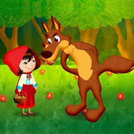

Capitulo 1
Érase una vez una preciosa niña que siempre llevaba una capa roja con capucha para protegerse del frío. Por eso, todo el mundo la llamaba Caperucita Roja.
Caperucita vivía en una casita cerca del bosque. Un día, la mamá de Caperucita le dijo:
– Hija mía, tu abuelita está enferma. He preparado una cestita con tortas y un tarrito de miel para que se la lleves. ¡Ya verás qué contenta se pone!
– ¡Estupendo, mamá! Yo también tengo muchas ganas de ir a visitarla – dijo Caperucita saltando de alegría.Cuando Caperucita se disponía a salir de casa, su mamá, con gesto un poco serio, le hizo una advertencia:
– Ten mucho cuidado, cariño. No te entretengas con nada y no hables con extraños. Sabes que en el bosque vive el lobo y es muy peligroso. Si ves que aparece, sigue tu camino sin detenerte.
– No te preocupes, mamita – dijo la niña -. Tendré en cuenta todo lo que me dices.
– Está bien – contestó la mamá, confiada –. Dame un besito y no tardes en regresar.

Capitulo 2
Cuando llegó al bosque, la pequeña comenzó a distraerse contemplando los pajaritos y recogiendo flores. No se dio cuenta de que alguien la observaba detrás de un viejo y frondoso árbol. De repente, oyó una voz dulce y zalamera.
– ¿A dónde vas, Caperucita? La niña, dando un respingo, se giró y vio que quien le hablaba era un enorme lobo.
– Voy a casa de mi abuelita, al otro lado del bosque. Está enferma y le llevo una deliciosa merienda y unas flores para alegrarle el día.
– ¡Oh, eso es estupendo! – dijo el astuto lobo -. Yo también vivo por allí. Te echo una carrera a ver quién llega antes. Cada uno iremos por un camino diferente. ¿Te parece bien?

Capitulo 3
diferente. ¿Te parece bien?
La inocente niña pensó que era una idea divertida y asintió con la cabeza. No sabía que el lobo había elegido el camino más corto para llegar primero a su destino. Cuando el animal llegó a casa de la abuela, llamó a la puerta.
– ¿Quién es? – gritó la mujer.
– Soy yo, abuelita, tu querida nieta Caperucita. Ábreme la puerta – dijo el lobo imitando la voz de la niña.
– Pasa, querida mía. La puerta está abierta – contestó la abuela.
El malvado lobo entró en la casa y sin pensárselo dos veces, saltó sobre la cama y se comió a la anciana. Después, se puso su camisón y su gorrito de dormir y se metió entre las sábanas esperando a que llegara la niña. Al rato, se oyeron unos golpes.
– ¿Quién llama? – dijo el lobo forzando la voz como si fuera la abuelita.
– Soy yo, Caperucita. Vengo a hacerte una visita y a traerte unos ricos dulces para merendar.
– Pasa, querida, estoy deseando abrazarte – dijo el lobo malvado relamiéndose.
La habitación estaba en penumbra. Cuando se acercó a la cama, a Caperucita le pareció que su abuela estaba muy cambiada. Extrañada, le dijo:
– Abuelita, abuelita ¡qué ojos tan grandes tienes!
– Son para verte mejor, preciosa mía – contestó el lobo, suavizando la voz.
– Abuelita, abuelita ¡qué orejas tan grandes tienes!
– Son para oírte mejor, querida.
– Pero… abuelita, abuelita ¡qué boca tan grande tienes!
– ¡Es para comerte mejor! – gritó el lobo dando un enorme salto y comiéndose a la niña de un bocado.